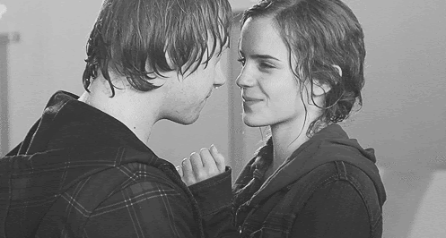

DRAMIONE
Draco + Hermione
Understandably, this ship invites a great deal of controversy. Many have argued that Draco, as a blood supremacist, could never be in a relationship with Hermione, a Muggle-born and activist. A detail that a lot of these people miss is that most Dramione stories hinge on the idea that Draco grows to be a better person. At this point, then, people argue that in order for Dramione to work, Draco's character has to be changed. However, there is a significant difference between character development and changing a character entirely. People grow and change in real life; why can't characters do that too?. Before you all come for me, this is not to say that Ron is unintelligent, but he certainly doesn't apply himself. This is also not to say that there is anything inherently wrong with being unintelligent. There are much worse things, such as willful ignorance. However, I do think someone like Hermione would benefit from having a partner who could mentally stimulate her and challenge her. Although Draco didn't give Hermione much of a run for her money in academia, he definitely showcased his problem-solving skills and magical aptitude when he fixed the Vanishing Cabinet and mastered the Protean Charm in his sixth year, among other things.I don't believe Hermione would ever have had to direct a teaspoon comment at Draco. From picking up on Ginny's crush on Harry early on, to playing on the Hogwarts students' general discontent with Harry stealing Cedric's spotlight during the Triwizard Tournament, to knowing exactly how to push people's buttons to get the desired reaction, you can't say that Draco didn't know how to read his audience. Naturally, it wasn't always for the best during his school years, but this ability to understand people and social situations can definitely be used in a positive way, not to mention Hermione wouldn't have to walk him through Emotions 101.

ROMIONE
Ron + Hermione
Hermione and Ron have completely different interests and personalities, but this means that they challenge each other. Hermione pushes Ron in his work while Ron encourages Hermione to lighten up and break some rules. Without each other, they never would have defeated the troll, got the Stone, or survived all the adventures they went on.Another great aspect of their relationship is that they’ve always had each other’s backs. Ron defended Hermione against Malfoy when he called her a “Mudblood” in their second year. Likewise, Hermione hexed Cormac when he verbally attacked Ron and Ginny behind their backs.In addition to defending each other against others, they’re also there for each other. In times of stress, they’re there to remind each other to calm down and do what must be done.Ron and Hermione are both flawed characters who have their own insecurities. Hermione tends to be a bit of a know-it-all, constantly demonstrating her wealth of knowledge to her peers, some of whom think that she’s a show-off. Ron’s self-doubt comes from being the youngest brother of an incredibly successfully family. He struggles with issues of his worth both among his friends and in his family. Over the years, they both helped each other combat their flaws.Hermione and Ron and the ultimate Harry Potter couple. They’ve supported and been there for each other through their ups and downs. They defended the other against those who wanted to bring them down and helped ground the other when they needed it. Their respect and love for one another led to a happy romantic relationship.
HARMONY
Harry + Hermione
This is a popular ship in the fandom, and although a handful of people wanted these two to end up together, there were more people who were against the idea of Harry and Hermione sharing a romantic connection. There is so much love between these two characters, there is no doubt about it, but the love between them feels more like a sibling connection rather than that of lovers.It's honestly refreshing that Harry and Hermione never caught feelings for each other in the books or films, because it proves that men and women can be platonic friends without there being any romantic feelings involved.